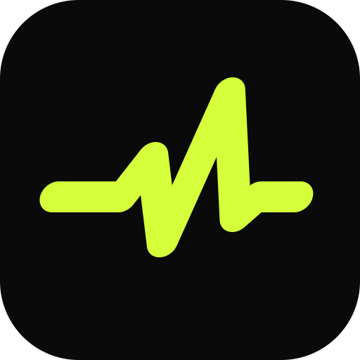
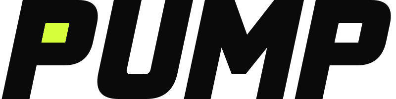

Treino em ritmo.
Post para Instagram
Treino em ritmo.
Manual da marca · versão 1 · outubro de 2026
01 · Conceito
Pump é o "pump" do treino: o músculo cheio, o coração acelerado, a constância. O logotipo tem o peso das grandes marcas de academia, com maiúsculas pesadas e inclinadas para a frente, e uma assinatura só nossa: o vazio do primeiro P aceso em verde, a luz de quem está treinando.
Letras grossas e cortes retos: a marca aguenta peso, como o aluno.
Inclinação de 12° para a frente. Nada parado: o treino está sempre avançando.
O verde-limão aparece pouco e no lugar certo: a luz do P, a ação, o pulso.
02 · Logo

Um batimento cardíaco forte, inclinado no mesmo ângulo das letras. Usado sozinho no ícone do app, no avatar das redes e no favicon.

"PUMP" desenhado letra a letra, sem usar fonte pronta: um desenho exclusivo, leve (menos de 1 KB) e nítido em qualquer tamanho.
Principal. Cabeçalho do site e do app, apresentações, e-mails.
Para espaços quadrados: camiseta, adesivo, tela de abertura.
Deixe em volta da marca um espaço livre igual à altura do pulso dentro do símbolo. Nada de texto ou imagem encostando.
03 · Cores
#0A0A0AFundo principal, símbolo
#D4FF3AAção, pulso, destaque
#F4F4F5Texto e letra do símbolo
#FF8A3DSó para avisos
70% preto · 20% branco · 8% verde · 2% laranja. O verde funciona porque é raro.
04 · Tipografia
Títulos e números (carga, peso, horários). Negrito, letras juntas.
Textos, botões e formulários. Leitura confortável no celular.
05 · Elemento gráfico
O batimento do símbolo vira linha de marca: divisória, barra de carregamento, assinatura de posts. Sempre em verde, sempre na horizontal, com um único pico.
06 · Ícone do app
Do ícone da loja ao favicon da aba do navegador.
07 · Aplicações
Post para Instagram
Post de resultado (com autorização do aluno)
08 · Usos incorretos
Esticar ou achatar
Trocar as cores
Usar sem contraste
Girar ou inclinar
09 · Arquivos
Todos em vetor (SVG): nítidos em qualquer tamanho. Para impressão ou redes que pedem PNG, é só pedir a exportação.